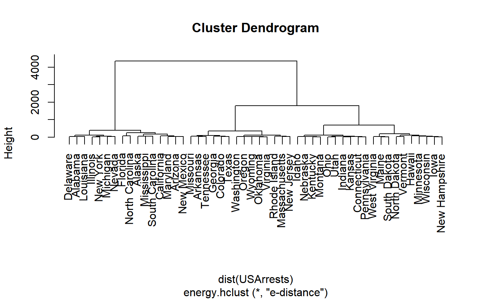

energy.hclust.RdPerforms hierarchical clustering by minimum (energy) E-distance method.
energy.hclust(dst, alpha = 1)
| dst |
|
|---|---|
| alpha | distance exponent |
Dissimilarities are \(d(x,y) = \|x-y\|^\alpha\), where the exponent \(\alpha\) is in the interval (0,2]. This function performs agglomerative hierarchical clustering. Initially, each of the n singletons is a cluster. At each of n-1 steps, the procedure merges the pair of clusters with minimum e-distance. The e-distance between two clusters \(C_i, C_j\) of sizes \(n_i, n_j\) is given by $$e(C_i, C_j)=\frac{n_i n_j}{n_i+n_j}[2M_{ij}-M_{ii}-M_{jj}], $$ where $$M_{ij}=\frac{1}{n_i n_j}\sum_{p=1}^{n_i} \sum_{q=1}^{n_j} \|X_{ip}-X_{jq}\|^\alpha,$$ \(\|\cdot\|\) denotes Euclidean norm, and \(X_{ip}\) denotes the p-th observation in the i-th cluster.
The return value is an object of class hclust, so hclust
methods such as print or plot methods, plclust, and cutree
are available. See the documentation for hclust.
The e-distance measures both the heterogeneity between clusters and the homogeneity within clusters. \(\mathcal E\)-clustering (\(\alpha=1\)) is particularly effective in high dimension, and is more effective than some standard hierarchical methods when clusters have equal means (see example below). For other advantages see the references.
edist computes the energy distances for the result (or any partition)
and returns the cluster distances in a dist object. See the edist
examples.
An object of class hclust which describes the tree produced by
the clustering process. The object is a list with components:
an n-1 by 2 matrix, where row i of merge describes the
merging of clusters at step i of the clustering. If an element j in the
row is negative, then observation -j was merged at this
stage. If j is positive then the merge was with the cluster
formed at the (earlier) stage j of the algorithm.
the clustering height: a vector of n-1 non-decreasing real numbers (the e-distance between merging clusters)
a vector giving a permutation of the indices of
original observations suitable for plotting, in the sense that a
cluster plot using this ordering and matrix merge will not have
crossings of the branches.
labels for each of the objects being clustered.
the call which produced the result.
the cluster method that has been used (e-distance).
the distance that has been used to create dst.
Currently stats::hclust implements Ward's method by method="ward.D2",
which applies the squared distances. That method was previously "ward".
Because both hclust and energy use the same type of Lance-Williams recursive formula to update cluster distances, now with the additional option method="ward.D" in hclust, the
energy distance method is easily implemented by hclust. (Some "Ward" algorithms do not use Lance-Williams, however). Energy clustering (with alpha=1) and "ward.D" now return the same result, except that the cluster heights of energy.hclust with alpha=1 are two times the heights from hclust.
However, the implementation in the energy package is more than 100 times faster than hclust. in a recent benchmark.
Szekely, G. J. and Rizzo, M. L. (2005) Hierarchical Clustering
via Joint Between-Within Distances: Extending Ward's Minimum
Variance Method, Journal of Classification 22(2) 151-183.
http://dx.doi.org/10.1007/s00357-005-0012-9
Szekely, G. J. and Rizzo, M. L. (2004) Testing for Equal Distributions in High Dimension, InterStat, November (5).
Szekely, G. J. (2000) Technical Report 03-05: \(\mathcal{E}\)-statistics: Energy of Statistical Samples, Department of Mathematics and Statistics, Bowling Green State University.
edist ksample.e eqdist.etest hclust
# NOT RUN { library(cluster) data(animals) plot(energy.hclust(dist(animals))) # }data(USArrests) ecl <- energy.hclust(dist(USArrests)) print(ecl)#> #> Call: #> energy.hclust(dst = dist(USArrests)) #> #> Cluster method : e-distance #> Distance : euclidean #> Number of objects: 50 #>plot(ecl)cutree(ecl, k=3)#> Alabama Alaska Arizona Arkansas California #> 1 1 1 2 1 #> Colorado Connecticut Delaware Florida Georgia #> 2 3 1 1 2 #> Hawaii Idaho Illinois Indiana Iowa #> 3 3 1 3 3 #> Kansas Kentucky Louisiana Maine Maryland #> 3 3 1 3 1 #> Massachusetts Michigan Minnesota Mississippi Missouri #> 2 1 3 1 2 #> Montana Nebraska Nevada New Hampshire New Jersey #> 3 3 1 3 2 #> New Mexico New York North Carolina North Dakota Ohio #> 1 1 1 3 3 #> Oklahoma Oregon Pennsylvania Rhode Island South Carolina #> 2 2 3 2 1 #> South Dakota Tennessee Texas Utah Vermont #> 3 2 2 3 3 #> Virginia Washington West Virginia Wisconsin Wyoming #> 2 2 3 3 2cutree(ecl, h=150)#> Alabama Alaska Arizona Arkansas California #> 1 2 3 4 3 #> Colorado Connecticut Delaware Florida Georgia #> 4 5 1 6 4 #> Hawaii Idaho Illinois Indiana Iowa #> 7 5 1 5 7 #> Kansas Kentucky Louisiana Maine Maryland #> 5 5 1 8 3 #> Massachusetts Michigan Minnesota Mississippi Missouri #> 9 1 7 2 4 #> Montana Nebraska Nevada New Hampshire New Jersey #> 5 5 1 7 9 #> New Mexico New York North Carolina North Dakota Ohio #> 3 1 6 7 5 #> Oklahoma Oregon Pennsylvania Rhode Island South Carolina #> 9 9 5 9 2 #> South Dakota Tennessee Texas Utah Vermont #> 8 4 4 5 7 #> Virginia Washington West Virginia Wisconsin Wyoming #> 9 9 8 7 9## compare performance of e-clustering, Ward's method, group average method ## when sampled populations have equal means: n=200, d=5, two groups z <- rbind(matrix(rnorm(1000), nrow=200), matrix(rnorm(1000, 0, 5), nrow=200)) g <- c(rep(1, 200), rep(2, 200)) d <- dist(z) e <- energy.hclust(d) a <- hclust(d, method="average") w <- hclust(d^2, method="ward.D2") list("E" = table(cutree(e, k=2) == g), "Ward" = table(cutree(w, k=2) == g), "Avg" = table(cutree(a, k=2) == g))#> $E #> #> FALSE TRUE #> 9 391 #> #> $Ward #> #> FALSE TRUE #> 179 221 #> #> $Avg #> #> FALSE TRUE #> 199 201 #>